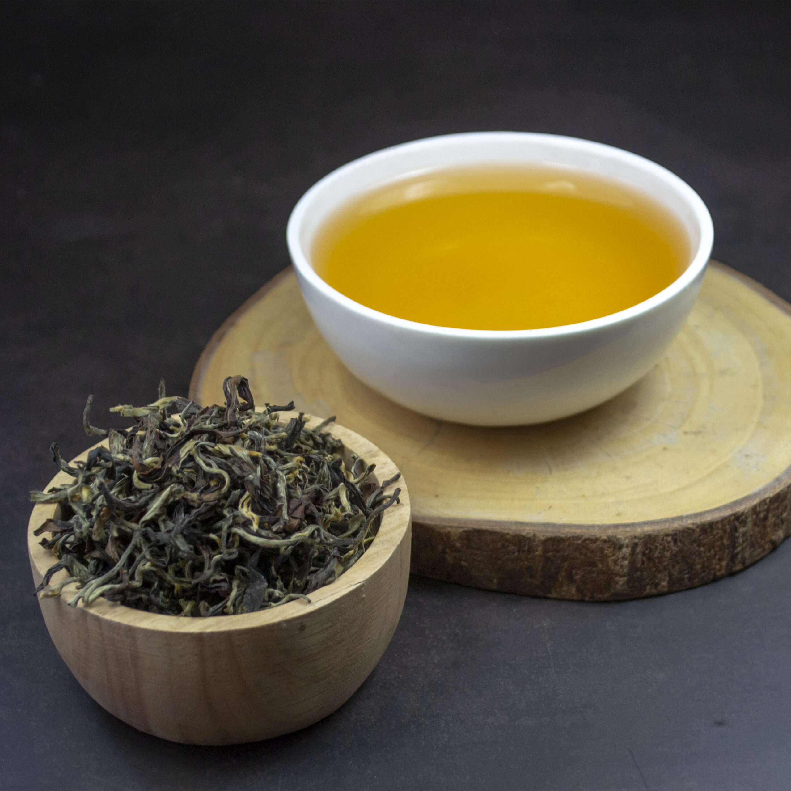
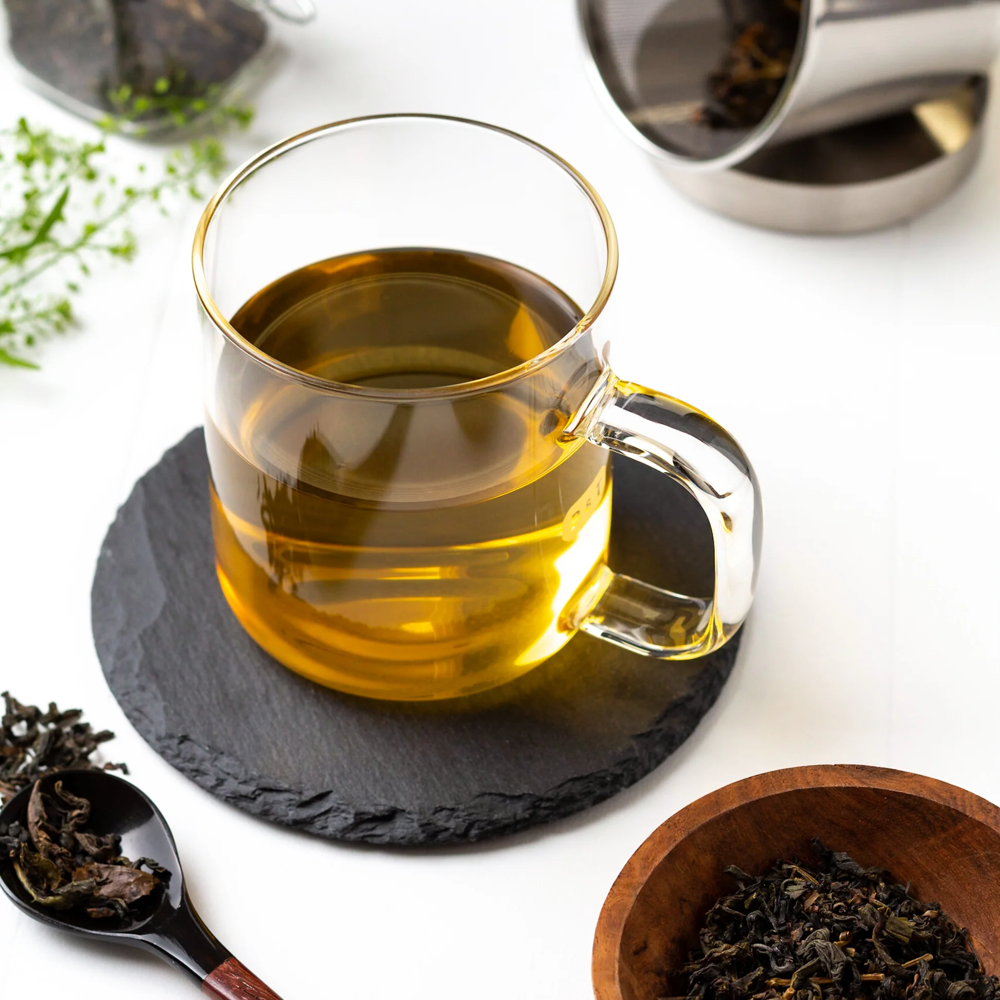

Oolong Tea
The connoisseur's choice — a tea of extraordinary complexity that bridges the freshness of green and the depth of black in a single extraordinary cup.
15–85%
Oxidized
3–5 min
Brew Time
80–90°C
Water Temp
30–50mg
Caffeine / Cup
The Best of Both Worlds
Oolong tea occupies a fascinating middle ground, partially oxidized anywhere from 15% to 85%, meaning no two oolongs are quite alike. Lightly oxidized oolongs are vibrant and floral, closer in character to green tea. Heavily oxidized oolongs are rich, roasted, and complex, approaching black tea territory.
Ceylon oolong, produced primarily in the Nuwara Eliya and Dimbula high-grown regions, is a relatively newer addition to Sri Lanka's tea portfolio but has quickly earned recognition among tea connoisseurs worldwide. The cool mountain climate and thin highland air impart a unique brightness and floral complexity that distinguishes it from Chinese or Taiwanese oolongs.
The production process is a skilled art: leaves are withered, bruised at the edges to initiate partial oxidation, then carefully monitored and heat-fixed at precisely the right moment to lock in the desired flavor profile.

Flavor, Aroma and Character
Taste
Complex and multi-layered. Light oolongs carry floral, fruity notes like orchid, peach, and lychee. Darker oolongs develop roasted, woody, and sometimes chocolatey notes. The finish is long, smooth, and transformative, revealing new flavors as it cools.
Aroma
One of the most aromatic of all teas. The scent changes as the cup cools, starting with bright floral and fruity notes, then deepening into warm, toasty undertones. Ceylon oolongs carry a distinctive mountain freshness throughout.
Liquor Color
Ranges from pale golden-green (lightly oxidized) to a warm amber-orange (heavily oxidized). The color is a reliable guide to the oxidation level and character of the tea, light and translucent to rich and glowing.
How to Brew Oolong Tea
Rinse the Leaves First
For tightly rolled oolongs, pour a small amount of hot water over the leaves, swirl briefly, then discard. This "awakens" the leaves and opens them up for a better infusion.
Water at 80–90°C
Lighter oolongs need cooler water (80°C); darker, more oxidized oolongs can handle hotter water (90°C). Matching temperature to oxidation level is the key to unlocking flavor.
Multiple Short Steeps
Oolong excels with multiple short infusions. First steep: 2–3 minutes. Each subsequent steep: add 30 seconds. Quality oolong can yield 4–6 wonderful infusions, each subtly different.
Enjoy Straight
Oolong is best enjoyed without milk or sugar to fully appreciate its nuanced complexity. Try different infusions side by side to explore how the character evolves.
Health Benefits
Weight Management
Oolong activates enzymes that help break down triglycerides (fat) stored in fat cells, making it particularly effective for weight management when combined with a healthy lifestyle.
Blood Sugar Control
Studies show oolong polyphenols can help regulate blood sugar levels and improve insulin sensitivity, making it a beneficial choice for those managing diabetes.
Bone Density
Regular oolong consumption has been associated with improved bone mineral density, potentially reducing the risk of osteoporosis in later life.
Stress Reduction
The L-theanine in oolong promotes alpha brain wave activity, leading to a state of relaxed alertness that reduces anxiety and improves focus simultaneously.